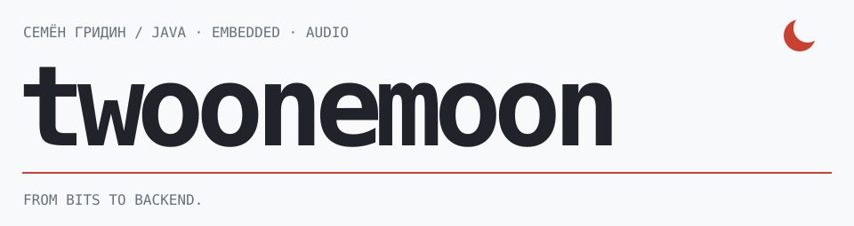
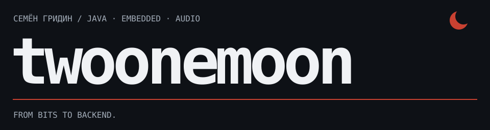
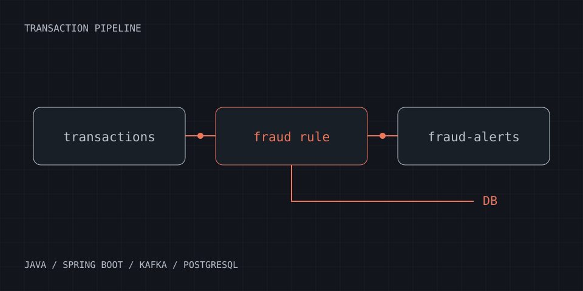
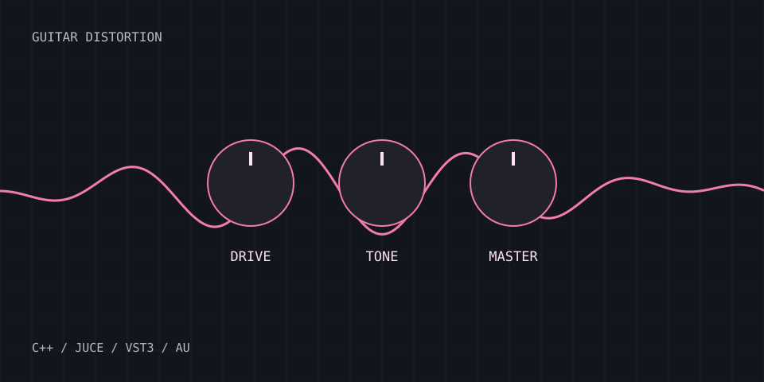
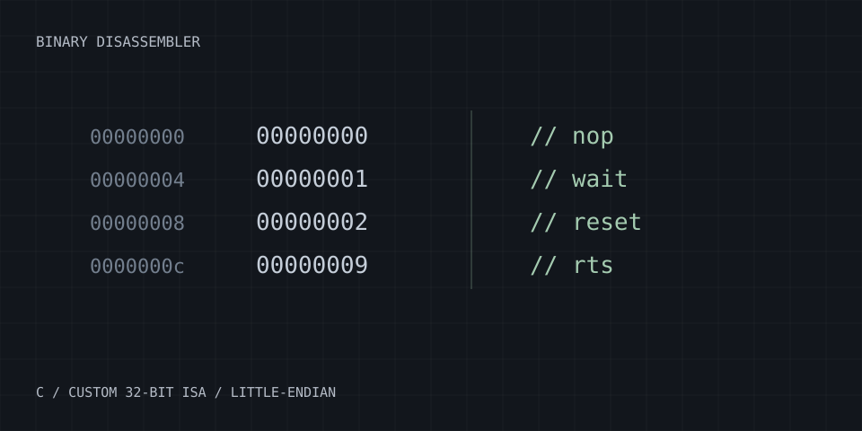

JAVA / EMBEDDED / AUDIO
twoonemoon


Я Семён Гридин.I’m Semyon Gridin.
Пишу на Java и C/C++. До Java писал прошивки и занимался верификацией микроконтроллеров. Ещё делаю гитарные плагины.I write Java and C/C++. Before Java, I worked on firmware and MCU verification. I also make guitar plugins.
ПроектыProjects

Audio · macOS · Apple Silicon
Гитарный процессор под macOS на Apple Silicon. Усилители, кабинеты, педали и эффекты в одном плагине. Есть отдельное приложение.A guitar processor for macOS on Apple Silicon. Amps, cabinets, pedals, and effects in one plugin. Also runs as a standalone app.
C++17 · iPlug2 · AUv2 / VST3 / CLAP
Пока тестовая версия. На реальной гитаре и вручную в DAW ещё не проверен.Still a test version. Not yet tested with a real guitar or manually in a DAW.
Код и подробностиCode and details
Backend
Сервис, который получает транзакции из Kafka. Проверяет сумму, при подозрительной операции отправляет алерт. Данные пишет в PostgreSQL.A service that reads transactions from Kafka. Checks the amount, sends an alert for suspicious transactions, and stores data in PostgreSQL.
Java 17 · Spring Boot · Kafka · PostgreSQL
КодCode
Backend
Подбирает фильмы по жанрам, которым пользователь ставил высокие оценки. Уже оценённые фильмы в подборку не попадают.Recommends films in genres the user rated highly. Films they have already rated are excluded.
Java 17 · Spring Boot · JPA · PostgreSQL
КодCode
Audio
Гитарный дисторшн на C++ и JUCE. Есть noise gate, эквалайзер, загрузка кабинетных IR и тюнер. Розовый.Guitar distortion in C++ and JUCE, with a noise gate, EQ, cabinet IR loading, and a tuner. Pink.
C++17 · JUCE · VST3 / AU
КодCode
Embedded
Небольшой дизассемблер на C под нестандартную 32-битную архитектуру. Читает бинарник и выдаёт листинг с названиями инструкций.A small C disassembler for a custom 32-bit architecture. Reads a binary and outputs a listing with instruction names.
C · 32-bit ISA · little-endian
КодCode
СтекStack
Backend
Java 17/21 · Spring Boot · Spring MVC · Spring Security
Hibernate / JPA · Kafka · PostgreSQL · REST API
Embedded
C / C++ · Assembly x86 / RISC-V · Verilog · Python
Cadence SimVision · Cadence Virtuoso · MATLAB
ИнструментыTools
Git · Maven · JUnit · Jira · Scrum
C++ / JUCE / iPlug2 · VST3 / AU / CLAP
Обо мнеAbout me
До Java писал
на ассемблере.Before Java,
I wrote assembly.
В 2026 окончил МИЭТ, интегральная электроника. Работал в Ангстреме: писал прошивки, верифицировал 32-битный МК и параллельно вёл проекты.I graduated from MIET in 2026, Integrated Electronics. At Angstrem I wrote firmware, worked on 32-bit MCU verification, and coordinated projects.
Сейчас занимаюсь Java/backend. Коммерческого опыта в Java пока нет, есть свои проекты. Рабочий опыт — embedded и микроэлектроника.I now work on Java/backend. No commercial Java experience yet; these are my own projects. My work experience is in embedded systems and microelectronics.
ОПЫТ / АО «АНГСТРЕМ»EXPERIENCE / ANGSTREM
Embedded & RTL
Писал прошивки для микроконтроллеров. Смотрел RTL-модели, находил, где реализация расходится со спецификацией.I wrote MCU firmware and reviewed RTL models to find where the implementation differed from the specification.
Координация проектовProject coordination
Планировал работу, координировал команду и общался со смежными организациями. Работал с Jira и Scrum.I planned work, coordinated the team, and worked with partner organisations. Used Jira and Scrum.
ОБРАЗОВАНИЕ / 2022–2026EDUCATION / 2022–2026
НИУ «МИЭТ»MIET
Бакалавриат, интегральная электроника. Изучал проектирование микросхем, микроконтроллеры, математику и физику.Bachelor’s degree in Integrated Electronics. Studied IC design, microcontrollers, mathematics, and physics.